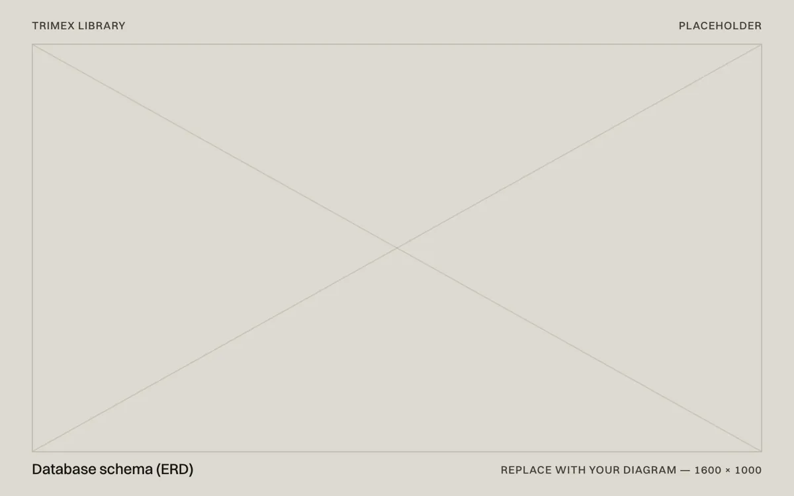
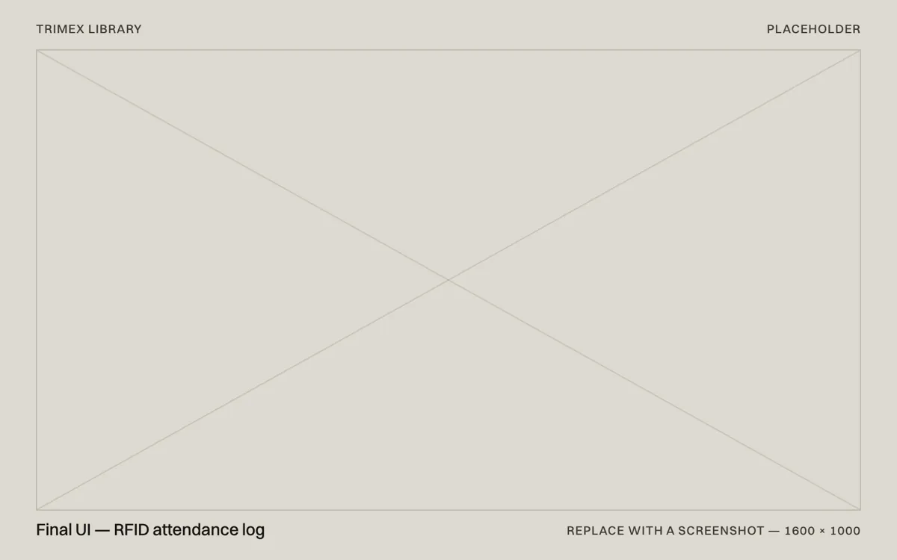
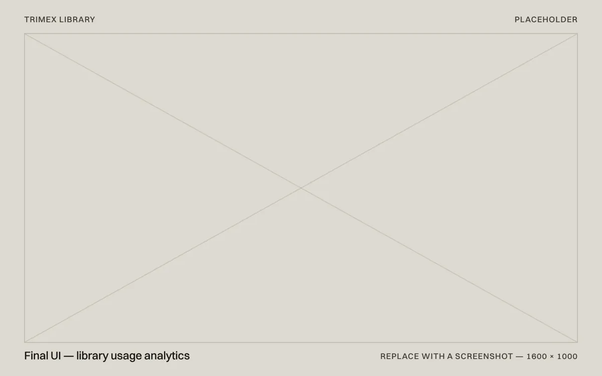

Case study 03 / 03 — OJT
Trimex Library System
A library management system with RFID attendance, school-account sign-in, online reservations and usage analytics.
- Role
- Web developer (OJT)
- Timeline
- Jan–Apr 2025, 4 months
- Client
- Trimex Colleges Library, Biñan
- Platform
- Web app with RFID reader
- Stack
- PHP, MySQL (PDO), HTML, CSS, JavaScript

At a glance
- Problem
- The library needed to log who came in, understand how it was used, and let students find and reserve books online.
- Solution
- A PHP and MySQL system with RFID attendance, school Gmail sign-in, genre browsing and reservations, and an admin side for librarians.
- Outcome
- RFID attendance, online reservations and a dashboard of library usage — delivered within a four-month OJT.
01 — Context
Giving a college library a clear view of how it’s used
During my on-the-job training at Trimex Colleges, I built a web-based system for the college library: attendance, accounts, reservations and reporting in one place.
TODO(john):Describe how attendance and reservations worked before — for example a paper logbook at the entrance and reservations at the desk — and what the librarians wanted to know that they couldn’t.
Constraints
- Two very different users: students passing through, and librarians managing everything.
- Sign-in had to use accounts students already have.
- Logging a visit had to take a second, or no one would do it.
02 — Requirements
Two users, two flows
Students want to be in and out; librarians want to know what happened. The system had to serve both.
Attendance should take one tap.Tying visits to an RFID card turns logging into something that happens on the way in, not a chore.
Use the accounts students already have.School Gmail sign-in means no new passwords to forget, and a reliable way to know who’s who.
Librarians need answers, not tables.Usage analytics summarise visits and reservations so staff can see patterns without exporting data.
Student flow
- 01Tap RFID card
- 02Visit logged
- 03Sign in with school Gmail
- 04Browse by genre
- 05Reserve a book
Librarian flow
- 01Manage books
- 02Handle reservations
- 03Review usage analytics
03 — System design
One database, two sides
Students and librarians work from the same records — students, books, visits and reservations — so a reservation made on the student side shows up straight away on the librarian’s.

TODO(john):Add your ERD, or a short note on the main tables and how the RFID reader sends visits to the system.
04 — Features
Fast for students, thorough for staff
The student side is built for speed; the librarian side for completeness.
Feature 01
A tap, not a form
Attendance is logged with an RFID card tap — no typing, no queue at a sign-in sheet.
Feature 02
Browse by genre
Books are grouped by genre, so students can explore the collection the way they would in the stacks, then reserve online.
Feature 03
One view of the numbers
The librarian dashboard brings visits, reservations and book records together.


05 — Build
Built to be handed over
An OJT project has to outlive the internship, so the code was kept plain and the risky parts were hardened.
- StackPHP and MySQL, with HTML, CSS and JavaScript on the front end.
- AttendanceRFID card taps recorded as library visits.
- Sign-inAuthentication with school Gmail accounts.
- ReservationsBrowse by genre and reserve online; librarians manage books and transactions from the admin side.
- ReportingAnalytics on how students use the library.
- SecurityRebuilt on PDO with prepared statements, with credentials moved into an environment file.
06 — Results
What changed
The library gained RFID attendance, school-account sign-in, online reservations and a view of its own usage — all within a four-month OJT.
- Built within the OJT, January to April 2025
- 4 mo.
- Students registered in the first [N] weeks
- [00]
- Visits logged by RFID in the first [N] weeks
- [00]
TODO(john):Replace the bracketed figures with real numbers — or a line from the librarian about what changed.
07 — Reflection
What I’d do next
Pilot the RFID flow for a week first.Real foot traffic shapes which reports are worth building.
Add reservation reminders.So reserved books don’t sit on the hold shelf uncollected.
Export the reports librarians already send.Meet the school’s existing paperwork instead of adding to it.